About
Experiences
Publications
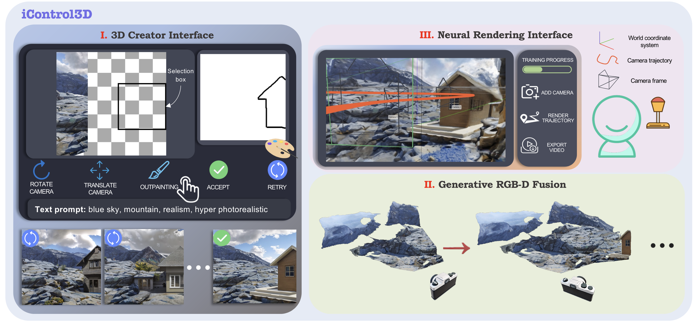
iControl3D: An Interactive System for Controllable 3D Scene Generation
ACMMM 2024
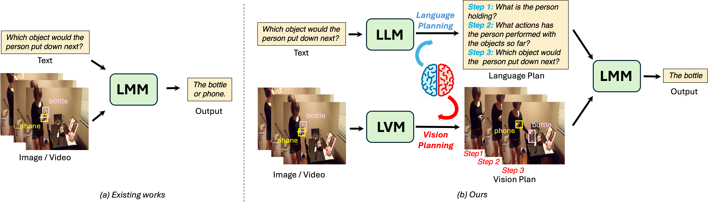
Using Left and Right Brains Together: Towards Vision and Language Planning
ICML 2024

Self-Supervised Class-Agnostic Motion Prediction with Spatial and Temporal Consistency Regularizations
CVPR 2024

Consistent Prompting for Rehearsal-Free Continual Learning
CVPR 2024
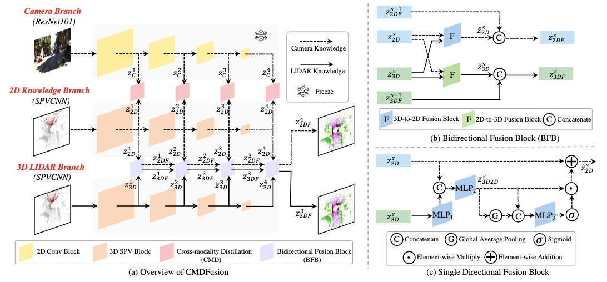
CMDFusion: Bidirectional Fusion Network with Cross-modality Knowledge Distillation for LIDAR Semantic Segmentation
RA-L 2023
SAD: Segment Any RGBD
NeurIPS 2023 workshop

Segment Any Point Cloud Sequences by Distilling Vision Foundation Models
NeurIPS 2023 Spotlight
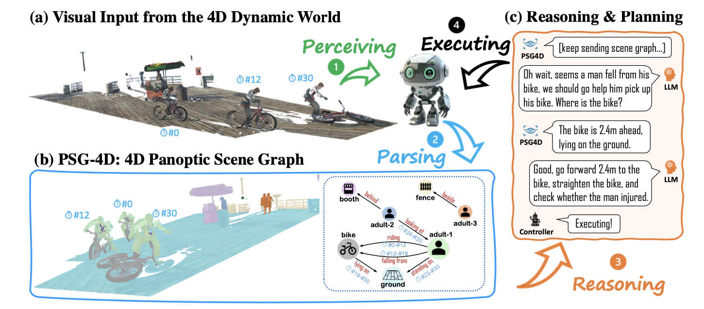
4D Panoptic Scene Graph Generation
NeurIPS 2023 Spotlight

CLIP-guided Prototype Modulating for Few-shot Action Recognition
IJCV 2023

Enlarge Instance-specific and Class-specific Information for Open-set Action Recognition
CVPR 2023
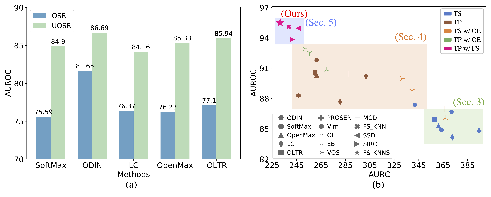
The Devil is in the Wrongly-classified Samples: Towards Unified Open-set Recognition
ICLR 2023
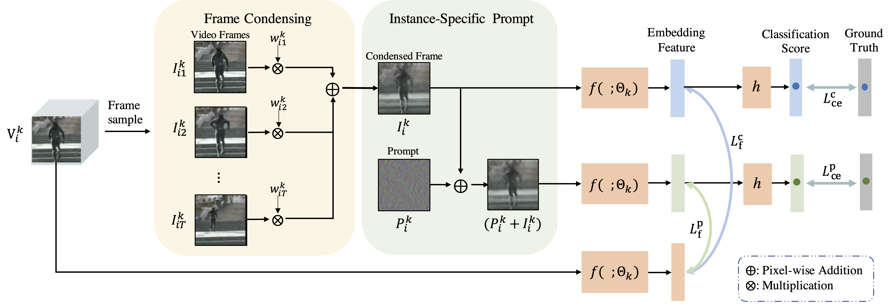
Learning a Condensed Frame for Memory-Efficient Video Class-Incremental Learning
NeurIPS 2022
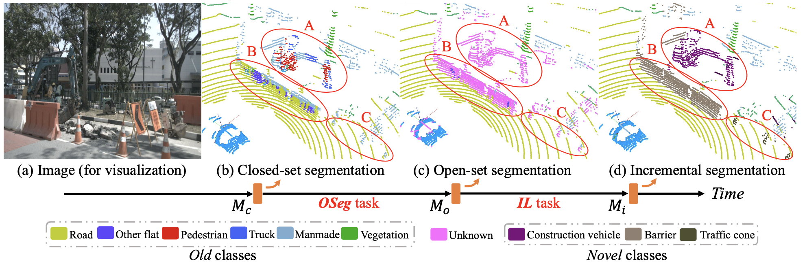
Open-world Semantic Segmentation for LIDAR Point Clouds
ECCV 2022
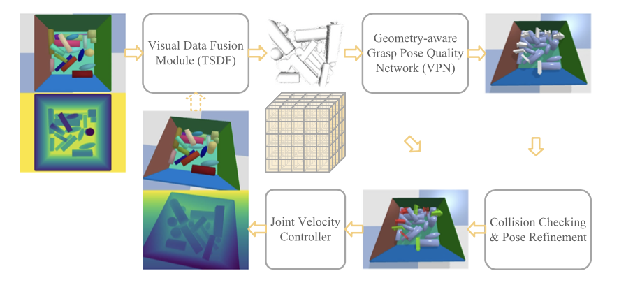
Real-Time Collision-Free Grasp Pose Detection With Geometry-Aware Refinement Using High-Resolution Volume
RA-L with ICRA 2022
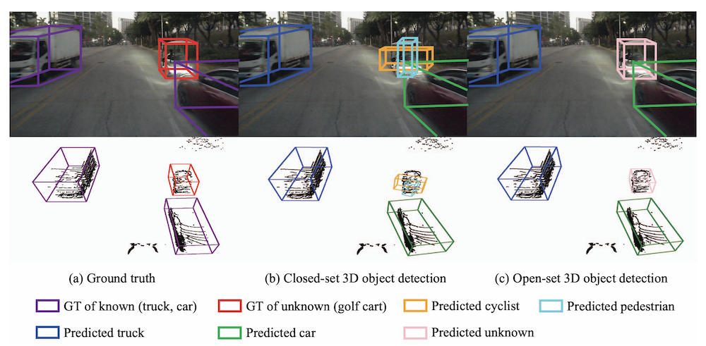
Open-set 3D Object Detection
3DV 2021
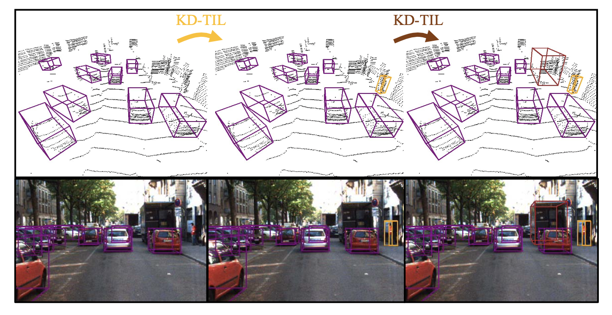
Conflicts between Likelihood and Knowledge Distillation in Task Incremental Learning for 3D Object Detection
3DV 2021
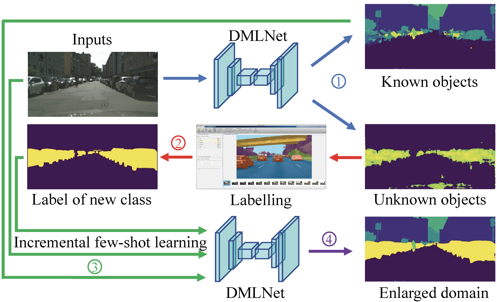
Deep Metric Learning for Open World Semantic Segmentation
ICCV 2021
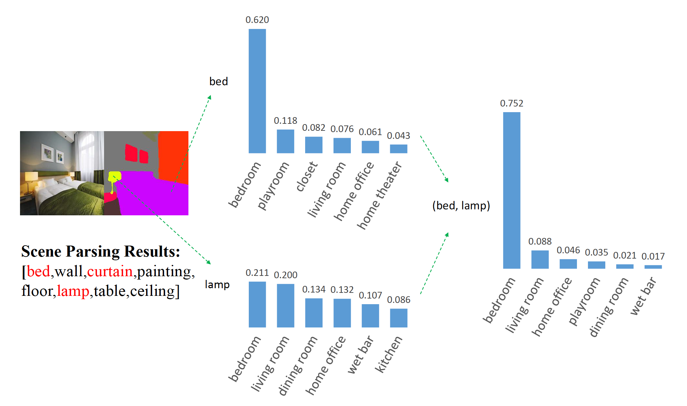
BORM: Bayesian Object Relation Model for Indoor Scene Recognition
IROS 2021
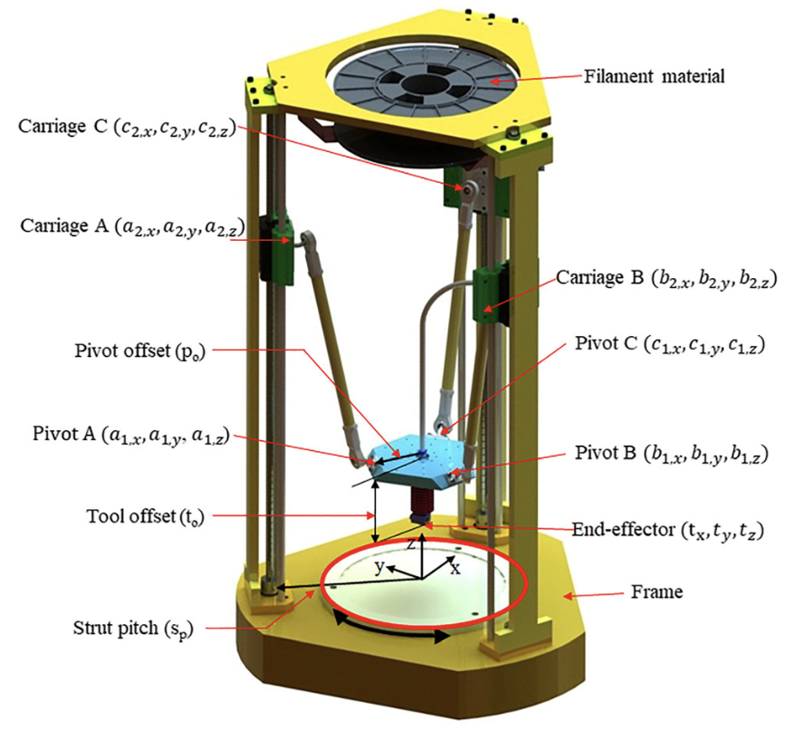
Precision forward design for 3D printing using kinematic sensitivity via Jacobian matrix considering uncertainty
IJAMT 2020
{kind=link}